Creado Por: Carlos Arturo M. Susatama como proyecto para la Licenciatura en Electrónica
Universidad Pedagógica Nacional - Colombia Bogotá
Se desarrolla un escenario virtual, que se puede ejecutar en navegador web para estudiantes del área de control, donde ellos simulan un sistema dinámico de manera matemática esperando fortalecer conocimientos a la hora de reconocer las variables que afectan el comportamiento de una planta física.
Se espera alcanzar la construcción del laboratorio mediante software, no tendrá implementaciones físicas o plantas, pero contará con herramientas para que el docente desarrolle preguntas en forma de test al estudiante que desee usar la aplicación.
No se garantiza ni evalúa la implementación con estudiantes. Queda en libertad para otros escenarios y extensiones posteriores a la realización de este proyecto, de acuerdo con las características a manejar por los desarrolladores y docentes que lo deseen usar.
Desarrollar una plataforma virtual que facilite la contextualización en temáticas de control automático en la licenciatura en Electrónica, permitiendo realizar el modelado, análisis y simulación de los sistemas dinámicos.
Existen varias plataformas orientadas al manejo de modelos matemáticos, unas enfocadas en la web como Wolfran, Matlab, geogebra, y oreas como aplicaciones para sistemas específicos tales como: Sclilab (Libre), Octave (Libre); que son referentes como modelo a este trabajo, sin embargo en el estudio se han trabajado otras plantillas para modelar sistemas en otras universidades de Colombia, que se nombraran en el transcurso de esta presentación y fueron útiles como formato para trabajar esta plataforma.
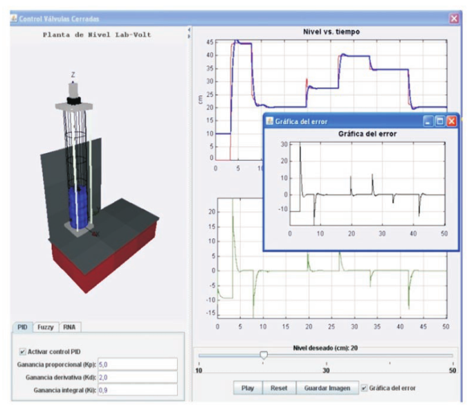 Esta publicación habla en relación a un proyecto para simular el control de sistemas, partiendo de programación lógica difusa y usando inteligencia artificial; fue programada con recursos de java, enfocado para ser un aplicativo de escritorio; para posteriores trabajos proponen la implementación el programa, como parte de una plantilla web.
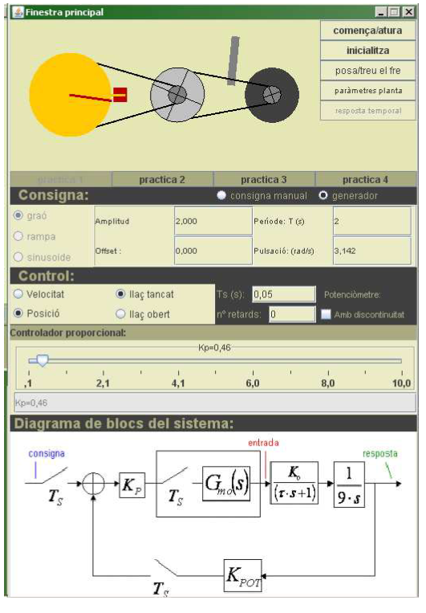 Este documento está basado en control discreto, y se orienta como apoyo al docente en el área de control, y trabaja con un sistema de un motor y varios engranajes con un sensor para ajustar la posición de los piñones; este sistema está conectado a una tarjeta de adquisición de datos, que junto al programa diseñado por java pueden simular con controlador PID discreto, y funciona como ayuda presencial para el estudiante a la hora de realizar sus prácticas.
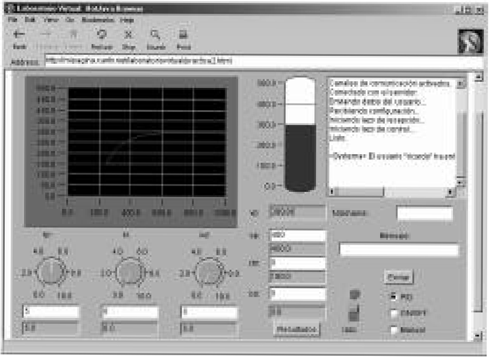 Esta plataforma virtual corre en navegadores que usan HTML2, diseñado con recursos de la época para servidores; cuenta con una serie de controles que permiten la manipulación de datos de un sistema ya modelado y configurado para un tipo de controlador especifico. Este aplicativo se propone como alternativa a herramientas como LabView y java que son de gran utilidad en la educación para ingenieros.
Este proyecto de grado se realizará a partir de la metodología SCRUM ÁGIL, para el desarrollo de software bajo los siguientes criterios: Planificación, Ejecución, Seguimiento y Control, Cierre.
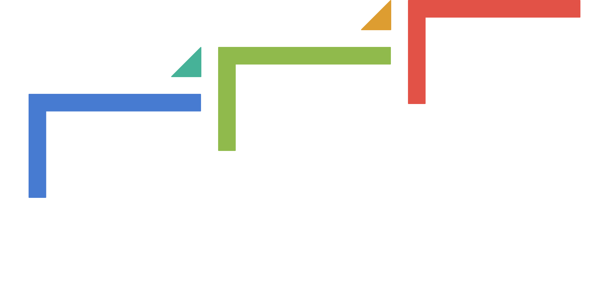
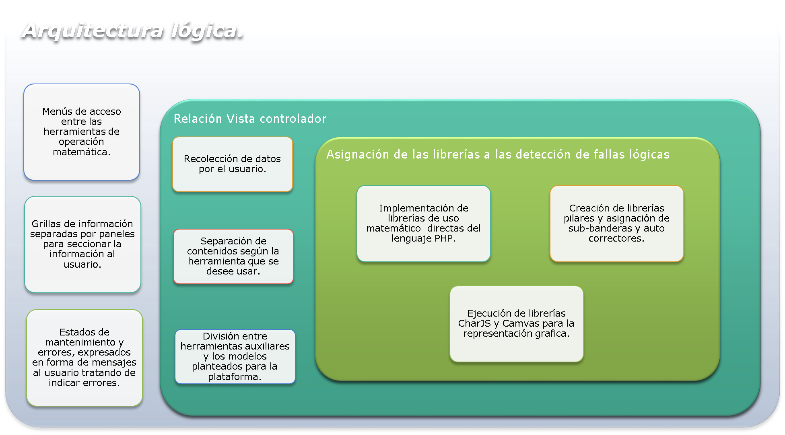
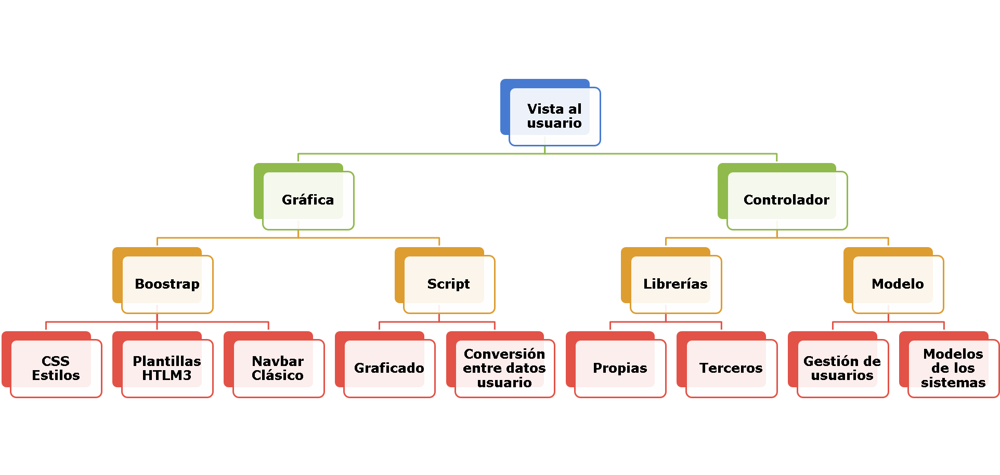
Según los elementos importantes de los modelos a escribir en la plataforma, se desarrollan una serie de librerías para ayudar al lenguaje de programación en la interpretación y solución de variables del sistema.
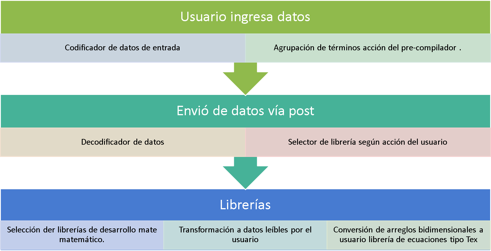
.
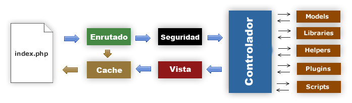
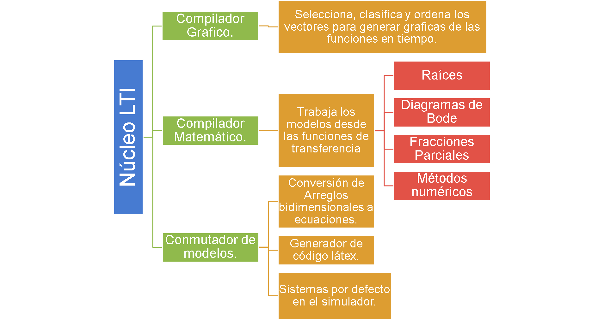
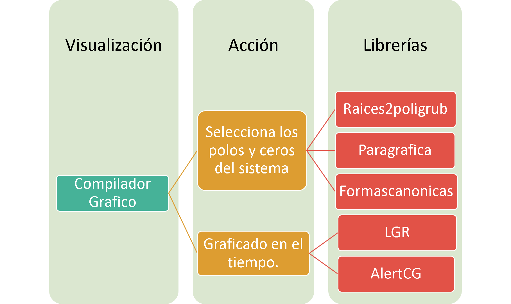
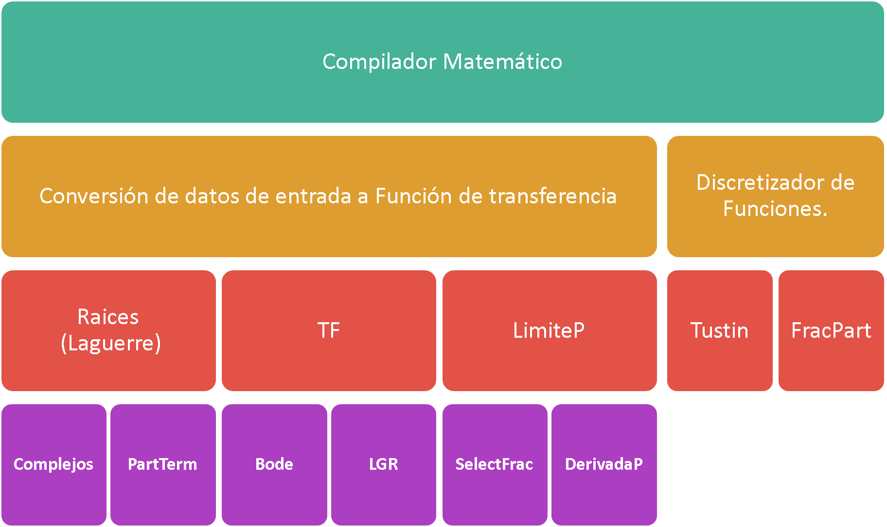
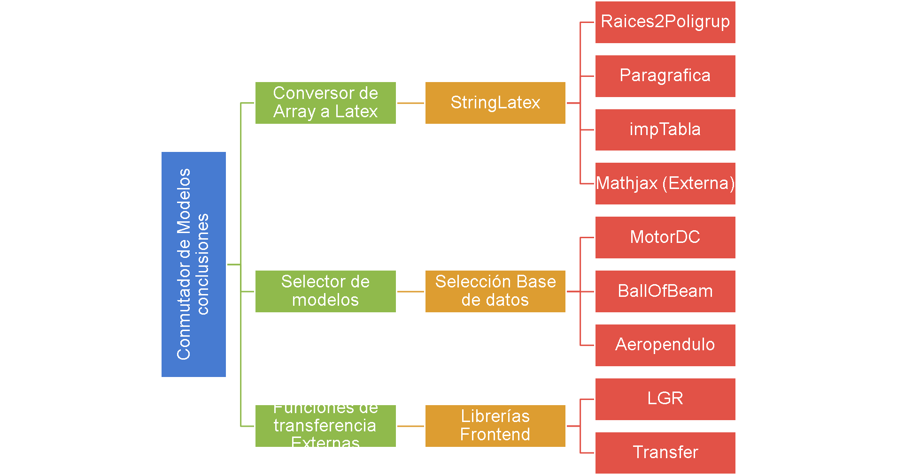
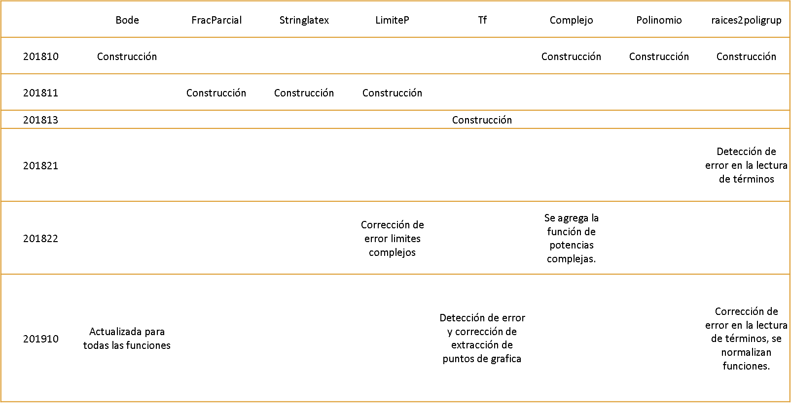
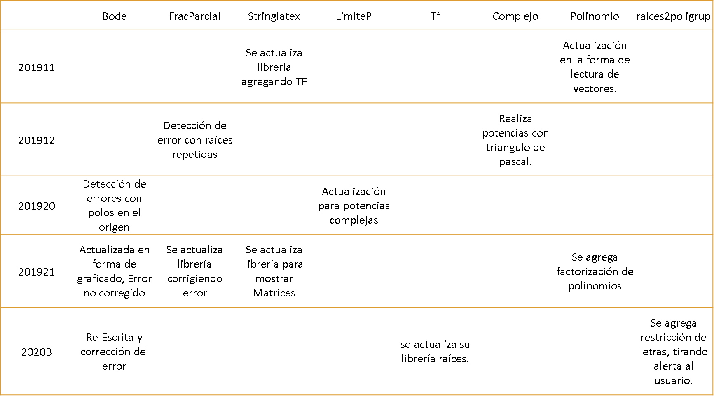
La plataforma tiene integrado 3 modelos matemáticos por defecto, que permiten la interacción del estudiante con los parámetros característicos de cada sistema Modelado.
En esta sección se muestra la sección donde se encuentran los modelos matemáticos.
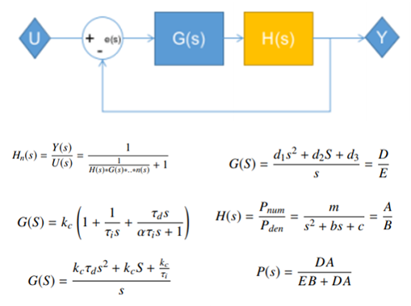Sección en la plataforma donde se muestran los modelos matemáticos
Al seleccionar un modelo especifico, la sección lógica de la plataforma se activa para detectar cambios al arrancar estos modelos muestra al información matemática de los modelos.
Al cambiar los parámetros y activar el botón ver solo sistema, ejecuta las librerías principales y llama de la base de datos el modelo seleccionado.
La plataforma muestra todos los datos gráficos antes los estímulos: Escalón, Impulso, Rampa
El estudiante podrá cambiar los parámetros del PID, hasta lograr un punto de estabilidad según los parámetros que selección.
Al ver las gráficas el estudiante podrá observar el comportamiento según los estímulos de lazo abierto y lazo cerrado con el controlador PID activo.
Etapa de la plataforma donde se habilita un espacio para hacer test.
La plataforma recolecta los datos de usuario solo con el fin de ingreso, respetando la ley del habeas data, que autoriza la Adquisición de datos de manera masiva, siempre y cuando sea a nivel institucional o educativo.
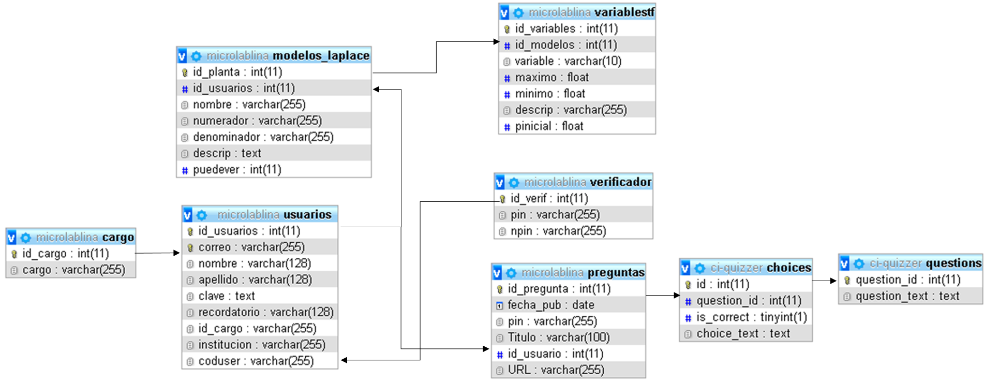Al estar el usuario logeado, muestra un nuevo panel en la sección inferior, donde aparece el gestor de preguntas.
Se muestra el gestor de preguntas de usuario, donde están el rol de invitado y Anfitrión en un solo espacio.
Aquí se muestra el listado de preguntas formuladas por el docente, puede eliminarlas o verlas.
Activa el vinculo y muestra el pin para compartir a la comunidad que el docente o miembro desee.
El usuario puede ingresar el pin para acceder a las preguntas formuladas por el docente.
El usuario invitado puede ver las preguntas del docente y responderlas, estas estan en línea mientras el maestro no las elimine.
...